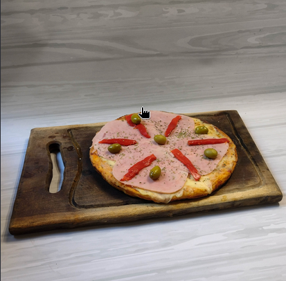
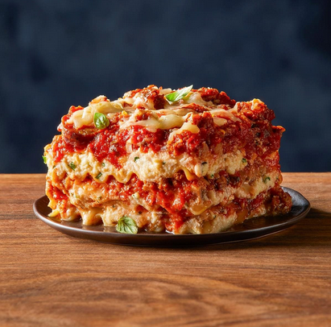
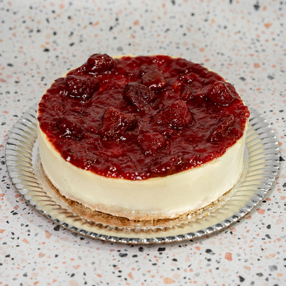
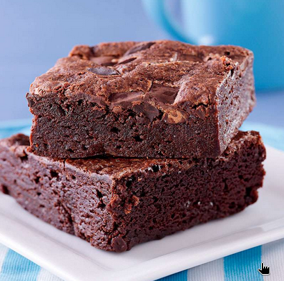
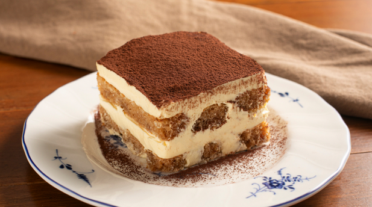

Salado
Pizza casera
Una pizza sencilla preparada con masa casera, salsa de tomate y queso.
Descargar receta PDFRecetas sencillas para disfrutar todos los días
Selecciona una categoría para ver sus recetas.

Una pizza sencilla preparada con masa casera, salsa de tomate y queso.
Descargar receta PDF
Empanadas rellenas de carne, cebolla y especias, ideales para compartir.
Descargar receta PDFUna tarta ligera y sabrosa preparada con verduras de estación.
Descargar receta PDF
Una torta húmeda de chocolate perfecta para acompañar el café.
Descargar receta PDF
Clásico flan con caramelo, suave y cremoso, preparado de manera tradicional.
Descargar receta PDF
Galletas caseras crocantes por fuera y suaves por dentro, con chips de chocolate.
Descargar receta PDFPuedes utilizar el siguiente formulario para comunicarte con nosotros.
Soy el responsable de mantener y actualizar este recetario. El objetivo de este sitio es reunir recetas sencillas, prácticas y deliciosas para cocinar en casa.
Las recetas se organizan en categorías para facilitar su consulta y cada una dispone de su correspondiente archivo PDF.